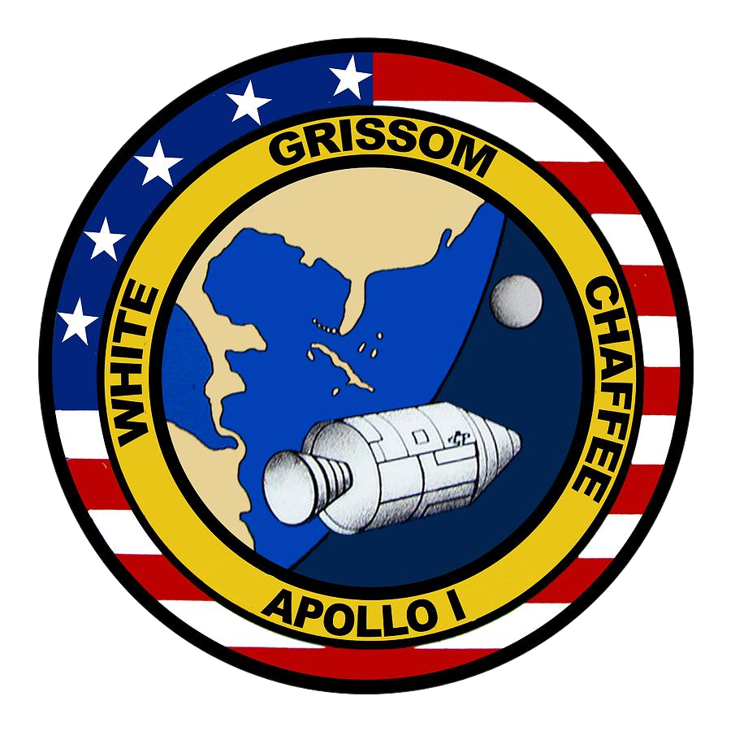
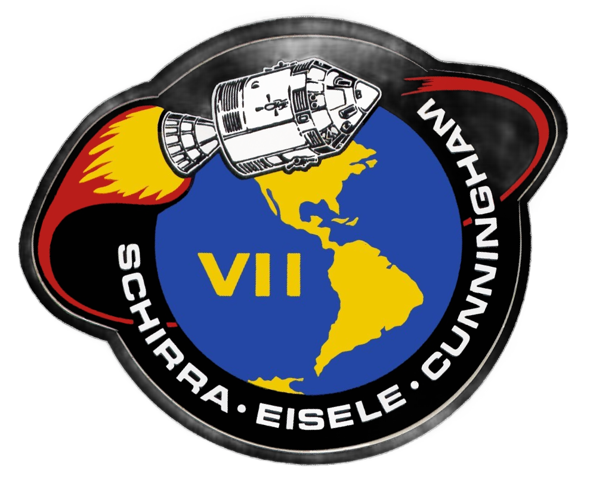
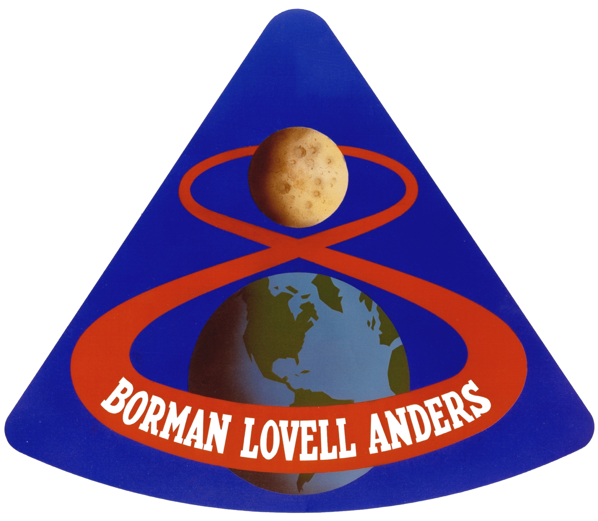
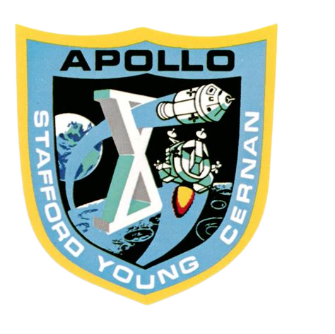
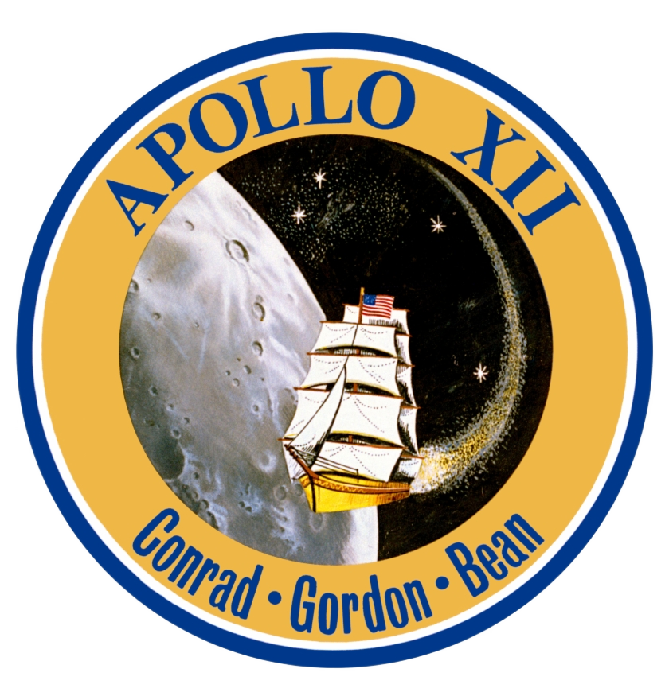
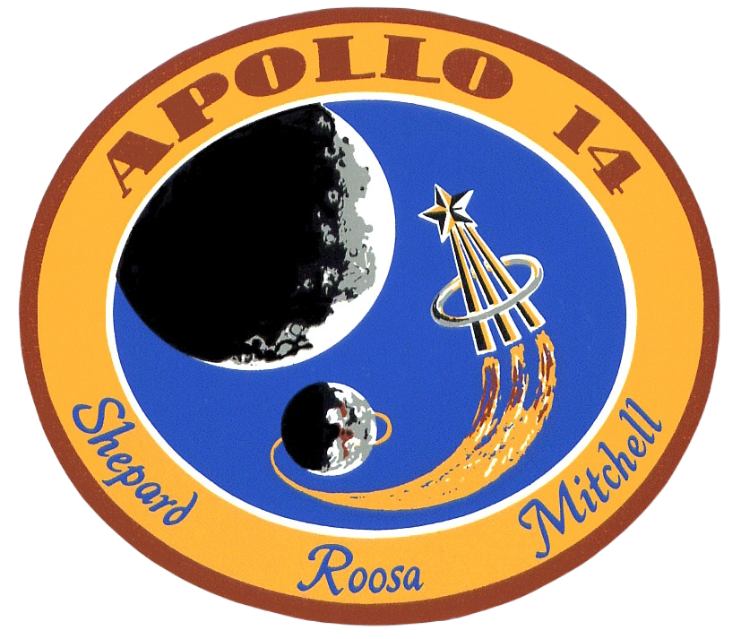
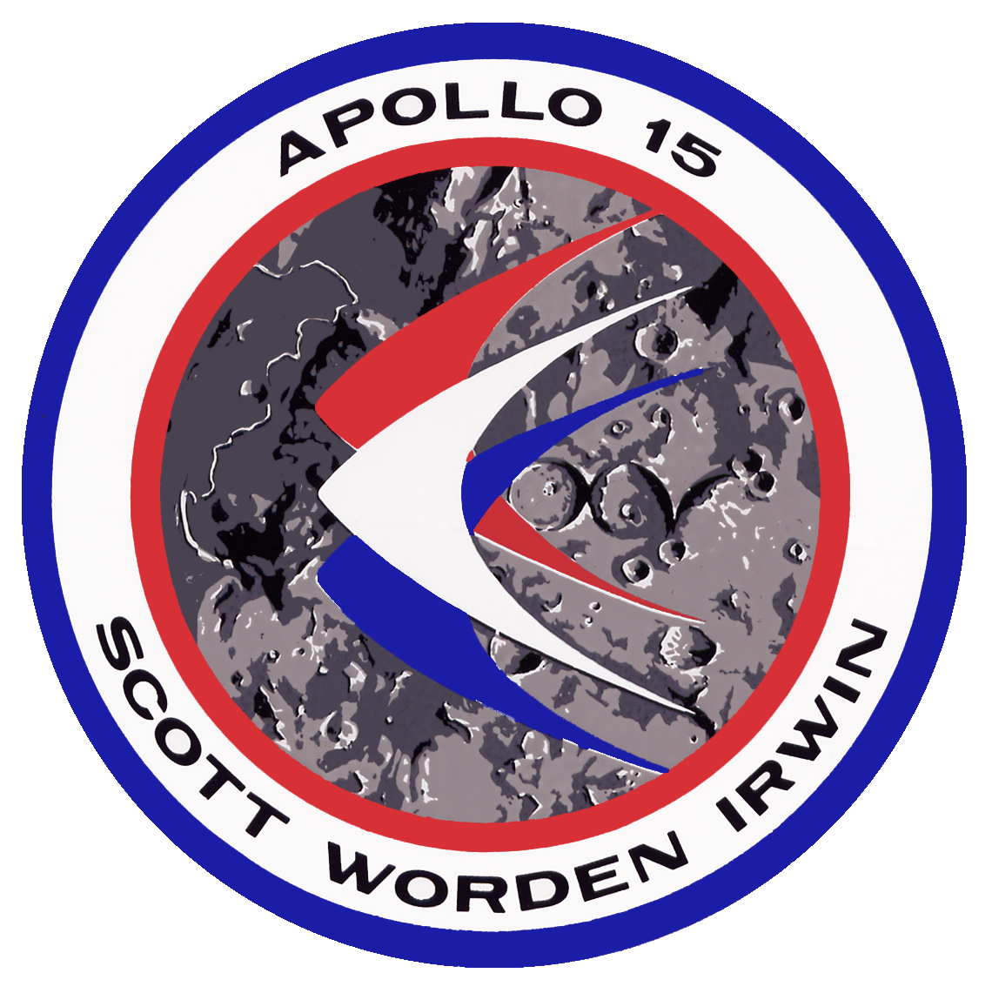
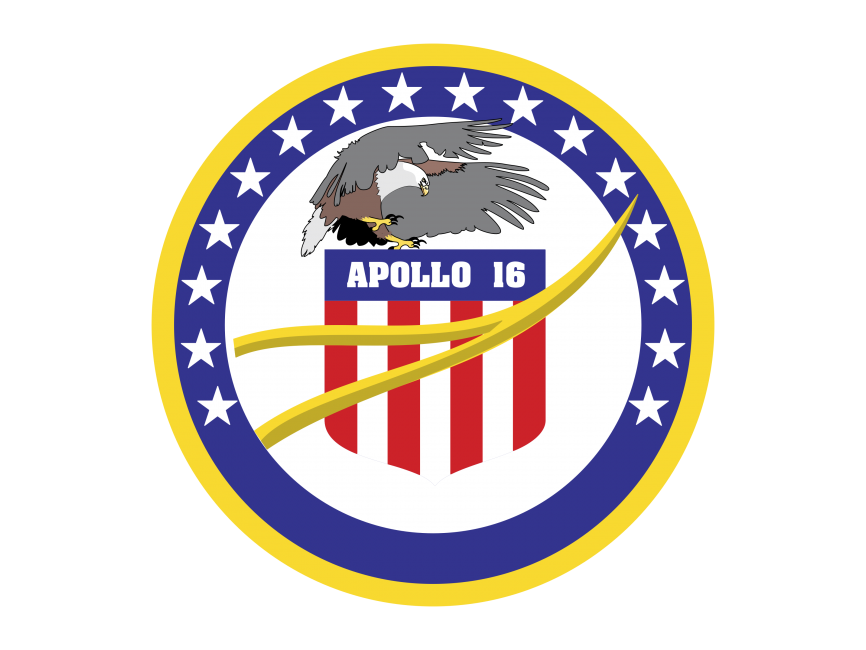
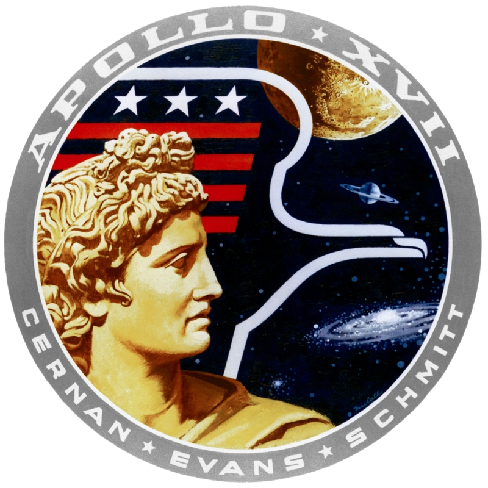

La navicella apollo 8 nell'orbita della luna
I membri del progetto Apollo 1
Il programma subì un brusco rallentamento durante i preparativi della missione AS-204, che avrebbe dovuto essere la prima, in orbita terrestre, con equipaggio a utilizzare un razzo Saturn IB.
Il 27 gennaio 1967, gli astronauti erano entrati nella navetta posta in cima al razzo, sulla rampa di lancio 34 del KSC, al fine di compiere un'esercitazione. Probabilmente a causa di una scintilla originata da un cavo elettrico scoperto, la navetta prese velocemente fuoco, facilitato dall'atmosfera densa di ossigeno. Per l'equipaggio, composto dal pilota comandante Virgil Grissom, dal pilota maggiore Edward White e dal pilota Roger Chaffee, non ci fu scampo.
A seguito di questo incidente la NASA e la North American Aviation (responsabile della fabbricazione del modulo di comando) intrapresero una serie di modifiche al progetto.La NASA decise in seguito di rinominare la missione in Apollo 1, in memoria del volo che gli astronauti avrebbero dovuto svolgere e non fecero mai.
Il saturn V
Dopo i tragici fatti di Apollo 1, la NASA decise di intraprendere alcune missioni prive di equipaggio. Si iniziò il 9 novembre 1967 con Apollo 4 (ufficialmente non esistono missioni Apollo 2 e Apollo 3) in cui per la prima volta fu utilizzato il razzo Saturn V. Successivamente venne la volta di Apollo 5 (razzo Saturn IB) lanciato il 2 gennaio 1968 e di Apollo 6 (di nuovo Saturn V) il 4 aprile dello stesso anno, sempre prive di equipaggio. Queste missioni si conclusero con grande successo dimostrando la potenza e l'affidabilità del nuovo vettore Saturn V, il primo in grado di avere una potenza sufficiente per portare la navetta spaziale sulla Luna.
La navicella apollo 8 nell'orbita della luna
La prima missione del programma Apollo a portare in orbita terrestre un equipaggio di astronauti fu l'Apollo 7, lanciato l'11 ottobre 1968. Gli astronauti Walter Schirra (comandante), Donn Eisele e Walter Cunningham rimasero per più di undici giorni in orbita, dove testarono il modulo di comando e di servizio. Nonostante alcuni problemi, la missione fu considerata un pieno successo. Gli ultimi incoraggianti risultati e la necessità di raggiungere il traguardo della Luna entro la fine del decennio, spinsero la NASA a pianificare il raggiungimento dell'orbita lunare nella missione successiva.L'equipaggio di Apollo 8 poco prima del lancio. Il 21 dicembre 1968 fu lanciata la missione Apollo 8 che per la prima volta raggiunse l'orbita lunare. Svolta dagli astronauti Frank Borman (comandante), James Lovell e William Anders, inizialmente avrebbe dovuto essere soltanto un test del modulo lunare in orbita terrestre. Essendo la realizzazione di quest'ultimo in ritardo, i vertici della NASA decisero di cambiare i piani.Il programma originario di Apollo 8 fu svolto da Apollo 9 (lanciata il 3 marzo 1969) che per la prima volta trasportò il modulo lunare e lo testò in condizioni reali, cioè nell'orbita terrestre. Durante la missione vennero eseguite la manovra rendezvous nonché di aggancio tra modulo di comando e modulo lunare. La missione fu un pieno successo e permise di testare ulteriori sottosistemi necessari per l'allunaggio, come ad esempio la tuta spaziale. Il modulo lunare Spider venne poi abbandonato in orbita terrestre, dove rimase fino al 1981 quando si disintegrò al rientro nell'atmosfera.La missione successiva, Apollo 10, fu nuovamente una missione che portò l'equipaggio vicino alla Luna. Lanciata il 18 maggio 1969 ebbe lo scopo di ripetere i test di Apollo 9, ma questa volta in orbita lunare. Vennero eseguite manovre di discesa, di risalita, di rendezvous e d'aggancio. Il modulo arrivò fino a 15,6 km dalla superficie lunare. Tutte le manovre previste furono correttamente compiute, anche se si rilevarono alcuni problemi giudicati facilmente risolvibili e che non avrebbero precluso l'allunaggio previsto con la missione successiva.
Il primo passo sulla luna
Il 16 luglio 1969, decollò la missione che passerà alla storia: Apollo 11. Quattro giorni dopo il lancio, il modulo lunare, con a bordo il comandante Neil Armstrong e il pilota Buzz Aldrin (Michael Collins rimase per tutto il tempo nel modulo di comando) atterrò sul suolo lunare. Quasi sette ore più tardi, il 21 luglio, Armstrong uscì dal LEM e divenne il primo essere umano a camminare sulla Luna. Toccò il suolo lunare alle ore 2:56 UTC con lo scarpone sinistro. Prima del contatto pronunciò la celebre frase
Continua a leggere...Apollo 12, lanciata il 14 novembre 1969, fu la seconda missione del programma ad allunare. Poco dopo il lancio, il razzo Saturn V fu colpito per due volte da un fulmine. Gli strumenti andarono off-line ma ripresero a funzionare poco dopo e i danni furono limitati al guasto di nove sensori di minore importanza e ciò non influenzò la missione in quanto tutto il resto era a posto e funzionava alla perfezione. A differenza di Apollo 11, questa missione allunò con altissima precisione, vicino alla sonda Surveyor 3 che gli astronauti riuscirono a raggiungere
La missione Apollo 13 fu funestata da un'esplosione che compromise l'obiettivo dell'allunaggio. Decollata l'11 aprile 1970, dopo 55 ore di volo il comandante Jim Lovell comunicò con il centro di controllo con la frase "Houston, we've had a problem" ("Houston, abbiamo avuto un problema"). In seguito a un rimescolamento programmato di uno dei quattro serbatoi dell'ossigeno presenti nel modulo di servizio, si verificò un'esplosione del medesimo con la conseguente perdita del prezioso gas. Il risultato fu che gli astronauti dovettero rinunciare a scendere sulla Luna e iniziare un difficile e imprevedibile rientro sulla Terra, utilizzando i sistemi di sopravvivenza che equipaggiavano il modulo lunare. La Luna fu comunque raggiunta per poter utilizzare il suo campo gravitazionale per far invertire la rotta alla navetta (in quanto l'unico motore in grado di farlo, quello del modulo di servizio, era considerato danneggiato). Grazie alla bravura degli astronauti e dei tecnici del centro di controllo, Apollo 13 riuscì, non senza ulteriori problemi, a fare ritorno sulla Terra il 17 aprile. La missione fu considerata un "fallimento di grande successo" in quanto l'obbiettivo della missione non fu raggiunto, ma la NASA si mise in luce per le capacità dimostrate nell'affrontare una situazione tanto critica. A seguito della missione di Apollo 13 ci fu una lunga indagine sulle cause dell'incidente che portò a una revisione completa della navicella Apollo.
Fu l'Apollo 14 a riprendere il programma di esplorazione lunare. La missione iniziò non troppo bene quando la delicata manovra di aggancio tra modulo di comando e modulo lunare dovette essere ripetuta sei volte. Il resto della missione si svolse senza particolari problemi e fu possibile effettuare l'allunaggio nei pressi del cratere di Fra Mauro, meta originaria di Apollo 13. Qui l'equipaggio svolse numerosi esperimenti scientifici. Per la prima volta fu portato sulla Luna il Modular Equipment Transporter che però si dimostrò un vero e proprio fallimento in quanto non fu quasi possibile muovere il veicolo che sprofondava continuamente nella polvere lunare. Questo compromise la seconda passeggiata lunare che dovette essere interrotta prematuramente
Il 26 luglio 1971 fu lanciata la missione Apollo 15 che introdusse un nuovo traguardo nell'esplorazione lunare, grazie a un modulo lunare più duraturo e all'introduzione di un rover lunare. Sulla Luna David Scott e James Irwin realizzarono ben tre uscite, con la seconda lunga 7 ore e 12 minuti. Questa portò gli astronauti fino al Mount Hadley che si trova a circa 5 km di distanza dal punto di allunaggio. Un trapano decisamente migliorato in confronto a quelli delle precedenti missioni consentì di prelevare dei campioni di roccia da oltre due metri di profondità. Durante la terza attività extraveicolare ci fu una breve commemorazione in onore degli astronauti deceduti e venne lasciata sul suolo lunare una statuetta di metallo denominata Fallen Astronaut
Apollo 16 fu la prima missione ad atterrare negli altopiani lunari. Durante le tre attività extraveicolari effettuate furono percorsi rispettivamente 4,2 km, 11 km e 11,4 km con il rover lunare che fu portato a una velocità di punta di 17,7 km/h. Vennero raccolti diversi campioni di rocce lunari, di cui uno da 11,3 kg, che rappresenta il più pesante campione mai raccolto dagli astronauti dell'Apollo.
Apollo 17, lanciato il 7 dicembre 1972, fu la missione con cui si chiuse il programma. Fu caratterizzata dall'inedita presenza di uno scienziato-astronauta: il geologo Harrison Schmitt
| Missione | Descrizione breve | Anno | Logo |
|---|---|---|---|
| Apollo 1 | Missione non lanciata, tragica perdita dell'equipaggio durante il test a terra | 1967 |  |
| Apollo 7 | Primo volo orbitale con equipaggio, test di sistema e supporto vitale | 1968 |  |
| Apollo 8 | Primo volo umano attorno alla Luna | 1968 |  |
| Apollo 9 | Test del modulo lunare in orbita terrestre | 1969 |  |
| Apollo 10 | Simulazione di avvicinamento alla Luna | 1969 |  |
| Apollo 11 | Primo allunaggio umano sulla Luna | 1969 | |
| Apollo 12 | Secondo allunaggio umano sulla Luna | 1969 |  |
| Apollo 13 | Missione abortita a causa di un'anomalia durante il viaggio verso la Luna | 1970 |  |
| Apollo 14 | Terzo allunaggio umano sulla Luna | 1971 |  |
| Apollo 15 | Esplorazione scientifica più estesa sulla Luna | 1971 |  |
| Apollo 16 | Quarto allunaggio umano sulla Luna | 1972 |  |
| Apollo 17 | Ultima missione Apollo sulla Luna | 1972 |  |